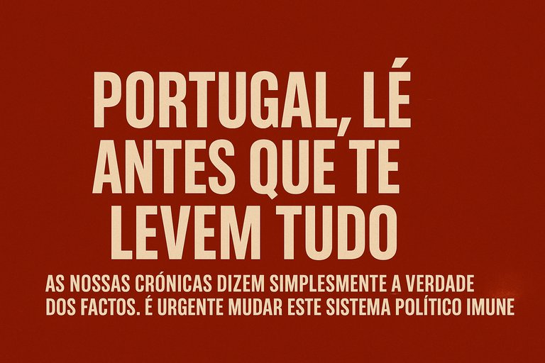

Publicado em 2025-06-14 11:30:14
Vivemos num país onde a mentira se tornou rotina, o descaramento norma e a impunidade uma instituição.
Um país onde quem denuncia é silenciado, mas quem rouba é promovido.
Um país onde o povo está cansado — mas ainda não desperto.
As nossas crónicas não são ficção, nem propaganda, nem queixumes de sofá.
São factos. Cruos. Reais. Dolorosos.
São verdades que sangram, mas que precisam de ser ditas.
Porque só quem encara a ferida pode curá-la.
Porque aquilo que está a acontecer não é normal.
Não é normal que bancos falidos sejam salvos com dinheiro público — e depois vendidos a fundos que lucram milhões.
Não é normal que políticos que falharam sejam promovidos.
Não é normal que se lavem milhões em casinos enquanto a justiça dorme.
Não é normal que se pague cada vez mais por menos saúde, menos escola, menos dignidade.
E se tudo isto te revolta, então tens de ler, partilhar, refletir.
O blogue “Fragmentos do Caos” é o espelho que o regime não quer ver.
É a voz que incomoda porque diz a verdade — sem medo e sem filtros.
Não te pedimos que acredites em nós.
Pedimos-te apenas que leias.
Que confrontes os factos.
Que compares as nossas palavras com aquilo que vês todos os dias no noticiário, no recibo do teu ordenado, no supermercado, na fila do centro de saúde.
Se leres, verás.
Se vires, despertarás.
E se despertares, já não te calas.
Portugal precisa de muito mais do que novos partidos ou novos slogans.
Precisa de cidadãos conscientes, informados, irredutíveis.
Precisa de gente como tu — que recusa ser tratada como número, como peão, como gado obediente.
A mudança não virá de cima.
Virá das margens. Das ruas. Das redes.
Das palavras que acendem consciências e fazem tremer os palácios da mentira.
👉 Lê as nossas crónicas.
👉 Partilha-as.
👉 Comenta. Questiona. Espalha.
Não escrevemos para agradar.
Escrevemos para acordar.
E acordar é o primeiro ato de coragem numa nação que há demasiado tempo vive anestesiada.
Portugal, lê antes que te levem tudo.
“As nossas crónicas não são opinião — são espelhos.
E quem tiver coragem de olhar verá o país real: saqueado, silenciado, mas ainda vivo.
Lê, partilha, desperta.
Porque a verdade não adormece — apenas espera por quem a ouse ler.”— Augustus Veritas
✍️🔥